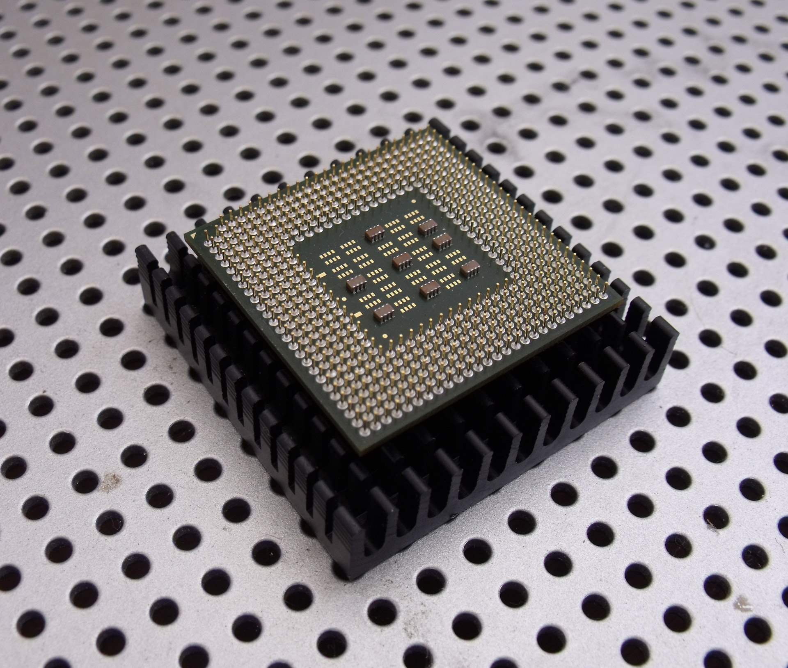

La carrera mundial por la Inteligencia Artificial se acelera
Las grandes empresas tecnológicas están invirtiendo cantidades gigantescas en IA y centros de datos. Empresas como Amazon, Microsoft, Meta y Google están destinando cientos de miles de millones de dólares para desarrollar modelos de IA más avanzados y la infraestructura para ejecutarlos.

Nuevos chips de IA (la gran batalla tecnológica)
Las empresas están diseñando chips propios para inteligencia artificial.
Por ejemplo:
- Meta anunció que desarrollará 4 nuevos chips de IA para sus centros de datos y servicios.
- Estos chips buscan competir con los de empresas como Nvidia y reducir la dependencia de proveedores externos.
También se espera que en el evento GTC 2026 se presenten nuevos procesadores especializados para IA y robótica.